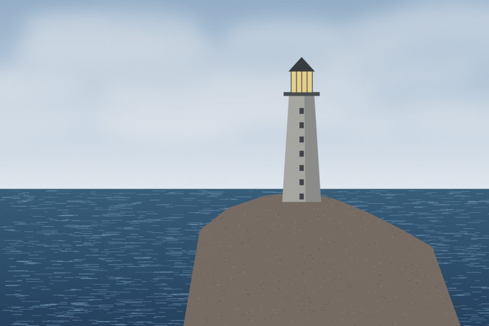

Historien
Vinga ligger längst ut i Göteborgs skärgård och är det första en fartygsbesättning ser på väg in mot hamnen. Det har funnits sjömärken på ön sedan 1600-talet, men det första riktiga fyrtornet stod klart 1841.
Tornet byggdes om 1890, och det är den byggnaden som står kvar. Fyren avbemannades 1974 och sköts sedan dess automatiskt.
Ljuset
Vinga har karaktären Fl(2) 10s: två blink var tionde sekund. Ljuset
sitter 28 meter över vattnet och når 17 nautiska mil ut.
- Blink
- Kort mörker
- Blink
- Långt mörker, tills tio sekunder gått
Att ta sig dit
Sommartid går turbåt från Göteborg. Resten av året krävs egen båt, och ön har ingen hamn som tål hårt väder.
Aktuella tider finns hos Sjöfartsverket.